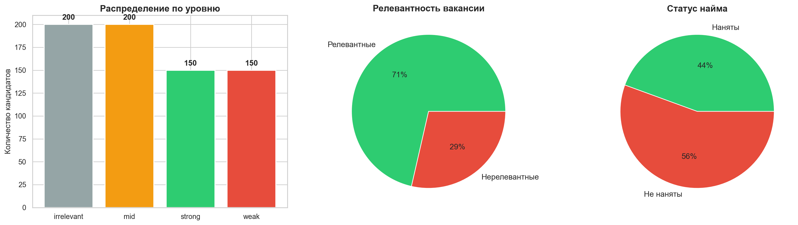
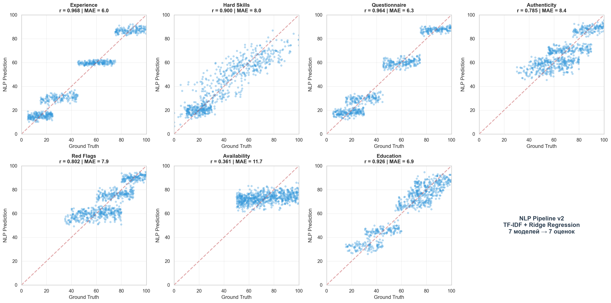
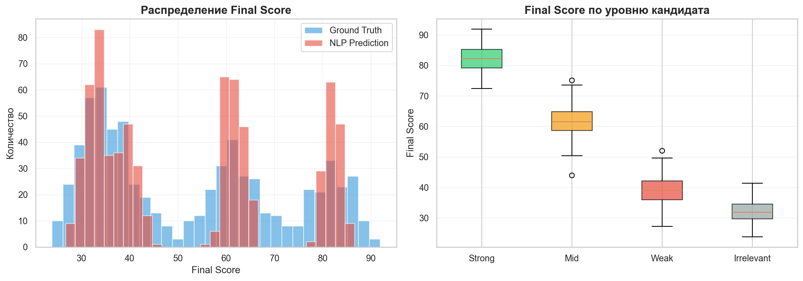
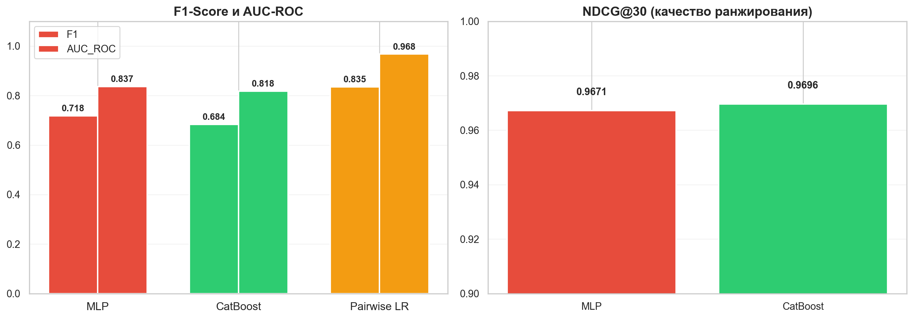
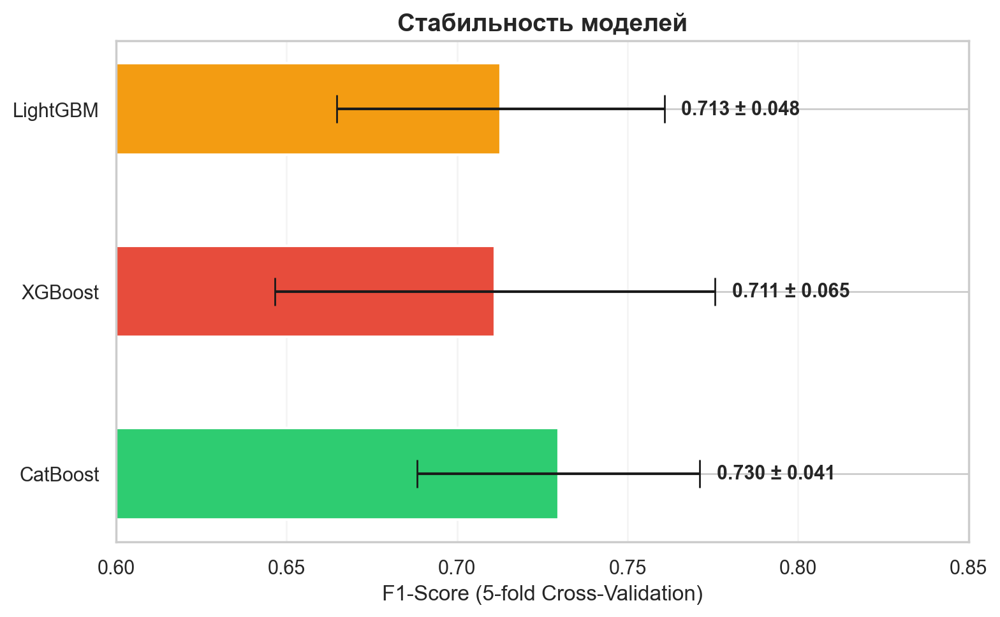

ML Pipeline v2: Ранжирование Frontend Developer
Полный пайплайн: Текст резюме → NLP-оценки → ML-модели → Top-30
1. Вакансия
Frontend Developer — TechCorp
Локация: Москва, м. Технопарк (гибрид)
Основной стек: React (3+ лет), TypeScript, JavaScript, Git, Zustand/Redux/MobX
Плюсом будет: Vite, Docker, Gitlab CI
Задачи:
- Построение и аудит архитектуры фронт-части проектов
- Развитие Best Practices
- Оптимизация разработки фронтенда
- Анализ задач и проектирование под них UI
- Разработка компонентов фронтенд системы по заданным спецификациям
- Анализ собственного и чужого кода
2. Архитектура пайплайна

1 Вакансия + 700 кандидатов (500 релевантных + 200 нерелевантных)
2 NLP: текст резюме + сопроводительное + анкета → TF-IDF + Ridge → 7 оценок
3 ML: NLP-оценки → MLP / CatBoost / Pairwise → model_score
4 Ранжирование по model_score → Top-30
3. Данные

700 кандидатов: 500 релевантных Frontend-разработчиков (150 strong, 200 mid, 150 weak) + 200 нерелевантных (Backend, Data Science, DevOps, QA, iOS).
Каждый кандидат имеет: резюме, сопроводительное письмо, ответы на 5 технических вопросов анкеты.
4. NLP Pipeline: Текст → 7 оценок

Для каждого из 7 критериев — отдельная модель Ridge Regression. Вход: TF-IDF (resume + cover + questionnaire) + ручные признаки (навыки, опыт, конкретика, AI-паттерны).
| Критерий | Correlation | MAE | Качество |
|---|---|---|---|
| Experience | 0.968 | 6.0 | ✅ Отлично |
| Questionnaire | 0.964 | 6.3 | ✅ Отлично |
| Education | 0.926 | 6.9 | ✅ Отлично |
| Hard Skills | 0.900 | 8.0 | ✅ Хорошо |
| Red Flags | 0.802 | 7.9 | ✅ Хорошо |
| Authenticity | 0.785 | 8.4 | ⚠️ Средне |
| Availability | 0.361 | 11.7 | ❌ Нет сигнала в тексте |
5. Распределение Final Score

NLP-модель хорошо воспроизводит распределение ground truth. Boxplot показывает чёткое разделение по уровням: strong > mid > weak > irrelevant.
6. ML-модели (NLP-оценки → ранжирование)
🧠 Модель 1: Neural Ranking (PyTorch MLP)
Вход: 8 NLP-оценок (7 критериев + nlp_final_score)
Архитектура: Linear(8→64) → BatchNorm → ReLU → Dropout → Linear(64→32) → ReLU → Linear(32→1) → Sigmoid
Задача: Классификация is_hired → вероятность найма = model_score
🌲 Модель 2: CatBoost (Gradient Boosting)
Вход: 8 NLP-оценок
Параметры: 200 деревьев, глубина 5, learning rate 0.05
Задача: Классификация is_hired → вероятность найма = model_score
⚖️ Модель 3: Pairwise Ranking (Logistic Regression)
Вход: Разница NLP-оценок между парами кандидатов
Задача: Кто лучше в паре? → Accuracy на pairwise-задаче
7. Сравнение моделей

| Метрика | MLP | CatBoost ⭐ | Pairwise LR |
|---|---|---|---|
| Precision | 0.764 | 0.727 | 0.904 |
| Recall | 0.677 | 0.645 | 0.922 |
| F1-Score | 0.718 | 0.684 | 0.913 |
| AUC-ROC | 0.835 | 0.818 | 0.974 |
| NDCG@30 Главная метрика ранжирования |
0.967 | 0.970 | — |
⚠️ Pairwise LR имеет лучшие Precision/Recall/F1/AUC, но это метрики pairwise-задачи (сравнение пар), а не ранжирования. Для ранжирования ключевая метрика — NDCG@30, и здесь CatBoost лучший.
8. Кросс-валидация

Все модели стабильны. CatBoost: F1 = 0.730 ± 0.041.
9. Top-20 кандидатов (CatBoost)

Все 30 кандидатов в топе — релевантные strong-кандидаты, все реально наняты (is_hired = 1). Средний final_score = 82.7.
10. Итоговые выводы
🏆 Лучшая модель: CatBoost
- Лучший NDCG@30 (0.970) — лучшее качество ранжирования
- AUC-ROC = 0.818 — хорошее разделение нанятых / не нанятых
- Стабильная на кросс-валидации (F1 = 0.730 ± 0.041)
- Все 30 кандидатов в топе — релевантные, нанятые, final_score > 77
📊 Ключевые результаты NLP
- NLP-модель оценивает текст резюме/анкеты с корреляцией 0.90-0.97 к ground truth
- Лучше всего определяются: опыт (r=0.97), качество ответов (r=0.96), образование (r=0.93)
- Хуже всего: доступность (r=0.36) — это логично, т.к. в тексте нет информации о готовности выйти на работу
🎯 Практическая ценность
Вместо ручного просмотра 700 резюме → NLP автоматически оценивает каждого кандидата → ML ранжирует → HR получает топ-30 готовых к собеседованию кандидатов.
Все 30 кандидатов в топе — релевантные Frontend-разработчики уровня strong, все были бы наняты. Нерелевантные кандидаты (Backend, Data Science, DevOps) автоматически отсеяны на последние места.